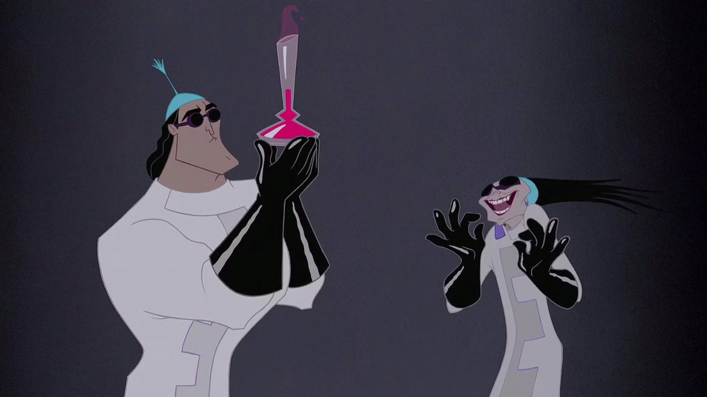
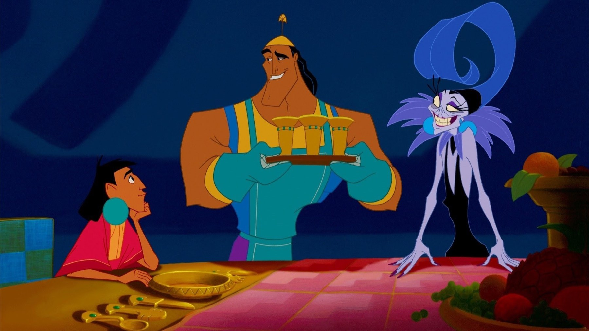

Le follie dell'imperatore, il film nato da un disastro
Un musical sugli Inca costato quasi 30 milioni e mai uscito, un documentario che Disney non ha pubblicato e un doppiaggio italiano diventato cult.
Quasi 30 milioni di dollari spesi su un film che la Disney decise di buttare via. È questo il punto di partenza di Le follie dell'imperatore, la commedia in cui un imperatore viziato finisce trasformato in lama e un cuoco buono a nulla gli salva la vita. Il film che ricordiamo a memoria nasce da un disastro, ma le voci italiane lo hanno poi reso un piccolo cult. Ecco sei cose da sapere prima di rivederlo.
Doveva essere un musical sugli Inca
Il progetto partì nel 1994 con un altro nome, Kingdom of the Sun, e un'ambizione enorme: un musical epico sugli Inca. Lo guidava Roger Allers, reduce dal Re Leone, insieme allo sceneggiatore Matthew Jacobs. La storia somigliava a Il principe e il povero di Twain: un imperatore incontra un contadino identico a lui e i due si scambiano i posti. A dare la voce al contadino era Owen Wilson, mentre David Spade interpretava già l'imperatore, che allora non si chiamava ancora Kuzco ma Manco.
Perché conta: dentro il film finito si sente ancora l'impianto di quella fiaba. Il sovrano arrogante che impara a vivere da umile esiste ancora, ma tutto il resto è stato riscritto come una corsa di inseguimenti e battute, e il vecchio scambio di persona è sparito.
Sting aveva scritto le canzoni sbagliate
Per il musical Allers chiamò Sting, che nel 1997 cominciò a scrivere le musiche. Il film però cambiò pelle e le sue canzoni persero il loro posto. Il documentario sulla lavorazione mostra perfino la telefonata in cui il produttore Randy Fullmer gli comunica che i suoi brani vengono tolti. Sting riuscì comunque a lasciare il segno, perché My Funny Friend and Me fu candidata all'Oscar per la miglior canzone originale. Vinse però Things Have Changed di Bob Dylan, scritta per Wonder Boys.
Perché conta: il film che conosciamo non è più un musical Disney ma una commedia di battute, e oggi lo ricordiamo per quelle e non per le canzoni.

Il film fermato a settembre 1998
Nell'estate del 1998 il progetto era così in ritardo che non poteva più uscire nel 2000. I test mostrarono due anime opposte: Allers voleva un film più serio e lineare, mentre il co-regista Mark Dindal faceva ridere. I dirigenti Thomas Schumacher e Peter Schneider divisero allora lo staff in due squadre, quella di Allers e quella di Dindal, e lasciarono che la scelta la facesse il risultato. Vinse la commedia di Dindal. Allers lasciò il film, quindi il 23 settembre 1998 Kingdom of the Sun fu accantonato, con costi di quasi 30 milioni di dollari. Il progetto prese un nuovo nome, The Emperor's New Groove.
Perché conta: da quella scelta esce un film che corre. Dura appena 78 minuti e passa dal musical epico alla farsa senza voltarsi indietro.
Il documentario che Disney non ha pubblicato
Tutto questo si sa perché qualcuno lo ha filmato. Trudie Styler, moglie di Sting, aveva ottenuto il permesso di girare la lavorazione e ne ricavò The Sweatbox, un documentario di 95 minuti presentato al Toronto International Film Festival il 13 settembre 2002. Racconta il braccio di ferro tra autori e dirigenti: Owen Wilson fu sostituito da John Goodman, la partitura di Marc Shaiman da quella di John Debney, e Sting protestò con una lettera per un finale che ritenne sbagliato. La Disney ha i diritti ma non lo ha mai pubblicato in home video: una copia è finita online il 21 marzo 2012, caricata da un fumettista britannico.
In italiano Yzma ha la voce di Anna Marchesini
Qui arriva la parte che per noi conta di più, perché in italiano il film cambia suono. Kuzco ha la voce di Luca Bizzarri e Kronk quella di Paolo Kessisoglu; Pacha è Adalberto Maria Merli, Yzma Anna Marchesini. Bizzarri e Kessisoglu sono due comici che fanno coppia fissa, e si sente perché quando Kuzco e Kronk si parlano addosso il tono è quello di un battibecco vero. Marchesini regala a Yzma una cattiveria da vecchia diva stufa di tutti, ed è il doppiaggio che la sua biografia su Wikipedia cita per primo tra i ruoli da ricordare.
Le battute che ancora citiamo nascono tutte lì. Nella scena del veleno Yzma apre la fiala sbagliata e scopre «estratto di... lama»; Kronk risponde a una sua minaccia con un «è nero forte». Più avanti, davanti ai due consiglieri che gli compaiono sulle spalle, si difende con «ero una Giovane Marmotta». Kuzco, richiamato da Pacha, se la cava con un «no, sono al bar». Sono battute che in italiano hanno un suono tutto loro.

Un flop che ha vinto gli scaffali
Al cinema il film andò così così. Negli Stati Uniti uscì il 15 dicembre 2000 e incassò circa 169,5 milioni di dollari a fronte di un budget di 100 milioni: meno dei grandi Disney degli anni Novanta. In Italia arrivò il 6 aprile 2001. Eppure fu il titolo Disney in home video più venduto del 2001 negli Stati Uniti, e col tempo diventò un film di culto. Seguirono un sequel diretto per l'home video, Le follie di Kronk, nel dicembre 2005 e una serie animata, A scuola con l'imperatore, dal 2006 al 2008.
A novembre 2026 si rivede su Disney Plus.
Il consiglio è di riascoltarlo in italiano, perché è un film nato da un disastro costoso e diventato, grazie a due comici e a una grande attrice, il cartone che citiamo ancora al bar. Qual è la battuta che usate voi?
Domande frequenti
Chi sono i doppiatori italiani di Kuzco e Yzma?
Kuzco ha la voce di Luca Bizzarri e Yzma quella di Anna Marchesini. Kronk è Paolo Kessisoglu, Pacha Adalberto Maria Merli.
Il film doveva essere un musical?
Sì. Si chiamava Kingdom of the Sun, era ambientato tra gli Inca e aveva canzoni di Sting. Fu accantonato il 23 settembre 1998 e rifatto come commedia.
Dove si vede Le follie dell'imperatore?
In Italia è su Disney Plus a novembre 2026.